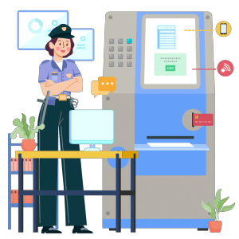

第一步：诈骗分子通过不法渠道获取特定单位或机关的人员通讯信息以及组织架构， 盗取或者创建“高仿号”来冒充领导经过公司人事添加或者直接通过微信、QQ添加被害人好友。
第二步：添加好友后诈骗分子冒充领导通过“寒暄”“慰问”拉近关系，使被害人降低戒备之心，骗取其信任。
第三步：取得被害人信任后，诈骗分子便用各种理由要求被害人帮忙转账，比如借钱、送礼、请客等等。 公司财会人员常会被诈骗分子拉入QQ群聊中，群聊中有公司领导、股东，甲方、乙方领导等，骗取财会人员信任。
第四步：被害人如果提出钱款并未到账，诈骗分子会以银行系统维护、跨行转账到账时间长、合同出现问题为由， 且声称事发紧急催促被害人先行垫付或者要求财会人员用公司账户向指定账户转账，从而完成诈骗。
犯罪嫌疑人通过电话、短信、网络社交工具(QQ、微信、微博等)等方式， 冒充被害人亲戚、子女、好友、同事、领导、公司老板、上级管理者等身份(冒充领导身边的秘书、司机等，同样是以领导的名义)， 以人在国外代买机票、交学费、给教授送礼、与其他公司合作伙伴签合同送礼、遇事急需用钱 违法被公安机关处理需要保释金、遇交通事故需救治或赔偿、处理关系不方便直接出面、 病重需手术等急危情况等事由，诱骗被害人转账汇款，从而实施诈骗。
一是添加好友要谨慎，在收到自称是单位领导、学生老师或者是企业老板发来的好友邀请， 一定要通过见面，电话等多种方式进行核实，避免个人信息泄露及财产受损。 二是转账汇款前要核实，一定要核实清楚对方的身份，避免没有见面或者没有打电话核实， 而仅通过即时通讯工具的方式，就向对方进行转款操作。 三是一旦发现自己遭遇了冒充熟人类诈骗，一定要第一时间将骗子的即时通讯工具账号信息、 群内聊天内容以及转账汇款凭证进行留存，并第一时间向当地的公安机关进行报案。
